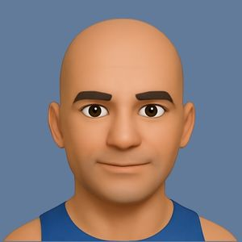

Respira
Dormi
Vivi
Meglio
L'Haloterapia Controllata è l'unico trattamento naturale scientificamente comprovato, a base di sale secco micronizzato ionizzato, in grado di migliorare la salute delle tue vie respiratorie e della cute, garantendoti la sicurezza e l'efficacia che cerchi.
Se non è Controllata, non è Haloterapia
Affidati alla sicurezza offerta dall'unico dispositivo medico certificato dal Ministero della Salute Italiano in grado di micronizzare e ionizzare il sale puro durante la tua seduta di Haloterapia, controllando costantemente la concentrazione salina all'interno della stanza.
Scopri i benefici dell'Haloterapia Controllata per le tue vie respiratorie e per la tua pelle. Vieni a trovarci alla Clinica del Salerno.
La nostra linea temporale
La scoperta scientifica
Il medico polacco Feliks Boczkowski scopre i benefici dell’aria salmastra secca per le vie respiratorie, studiando i minatori delle miniere di sale di Wielcza, i quali, nonostante le condizioni lavorative estreme, non soffrivano di patologie dell’apparato respiratorio. Un'antica forma di trattamento naturale, nota con il nome di speleoterapia, si sviluppa nell'Est Europa
Studi medici pioneristici
Vengono svolte le prime RICERCHE CLINICHE in Europa che confermano gli importanti effetti positivi del sale micronizzato per le malattie respiratorie e cutanee. Nasce così l'Haloterapia Controllata, svolta in un ambiente protetto in una stanza dedicata.
I primi dispositivi medici
Viene lanciato sul mercato, da un'azienda leader nel settore medicale, il primo micronizzatore salino in grado di replicare gli effetti curativi dell'Haloterapia Controllata, grazie ad un dispositvo integrato che misura costantemente la concentrazione di sale nella stanza dove viene istallato.
Terapia medica riconosciuta
Dopo 15 anni di studi scientifici svolti con quel pioneristico dispositivo, e con le sue successive versioni aggiorante sempre più perfezionate, sono stati pubblicati centinaia di studi medici, grazie ai quali l'Haloterapia Controllata è diventata uno standard di cura in diverse nazioni.
L'azienda produce così il suo primo halogeneratore ad uso medicale al mondo, classe II A, marcato CE.
Apre a Salerno il primo centro di Haloterapia Controllata
Dopo ulteriori anni di miglioramento e consolidamento nel mercato, con migliaia di istallazioni nel Mondo, la Clinica del Salerno decide di portare ai pazienti della provincia campana la sicurezza ed efficacia proprio della più recente versione di quello stesso dispositivo medico, riferimento mondiale per l'Haloterapia Controllata.
La nostra missione
Secondo la visione della Clinica del Salerno, la salute di ciascuno di noi non coincide con l'eliminazione il prima possibile dei sintomi per massimizzare la produttività lavorativa o scolastica, come fossimo macchine, ma, in accordo con la definizione dell'OMS, uno stato di equilibrio e completo benessere, sia fisico che mentale. Assieme all'Associazione Mondiale di Haloterapia, di cui facciamo parte, diversi otorinolaringoiatri, pneumologi e dermatologi che condividono questo approccio, ambiamo a trasmettere una cultura della cura dell'apparato repiratorio e della cute, scientificamente comprovata, attenta al paziente, lenta (slow-health) e sostenibile.
I nostri pazienti
Intervento chirurgico evitato
Mio figlio (12 anni) soffre di ipertrofia dei turbinati, delle tonsille e delle adenoidi. Sono entusiasta dei risultati ottenuti già dopo poche sedute: sta espellendo i muchi, respira molto meglio e il suo stato generale di salute è migliorato. L'ambiente è gradevole e rilassante. I titolari sono professionali e disponibili. Consiglio vivamente questa struttura.

Riposo e benessere ritrovati
Con mia moglie abbiamo fatto insieme un ciclo completo di sedute. Dopo solo 3 sedute, abbiamo notato dei notevoli miglioramenti. Addirittura, ad un controllo che abbiamo fatto adesso dall'otorino, è stato riscontrato che l'edema della mucosa nasale si è notevolmente ridotto, senza aver fatto alcuna terapia medica! Dormiamo meglio e la cefalea di mia moglie sembra migliorata, come anche il mio riposo notturno è più soddisfacente. Stiamo raccomandando questo trattamento a familiari ed amici! Ritorneremo senz'altro!

Risultati concreti comprovati
Il mio Otorinolaringoiatra mi ha prescritto un ciclo di sedute presso questa clinica. Inizialmente ero titubante, ma ho riscontrato che funziona, anche meglio dei farmaci. Inoltre il centro è nuovo e pulito ed il personale è cordiale.

Intervento scampato!
Struttura molto bella, nuova e pulita. Volevo ringraziare Rosa e Andrea per la loro professionalità, umanità e attenzione. Mi sono fidata dell'otorino, e grazie alla terapia abbiamo risolto il problema delle adenoidi. Abbiamo scampato l’intervento alla piccola! Grazie di cuore ❤️

Miglioramenti immediati
Offrono un servizio eccellente si notano miglioramenti nelle vie respiratorie dopo poche sedute io credo che tutti dovremmo considerare questo centro per il bene di tutti la famiglia specie nei bambini grazie per il vostro supporto.
